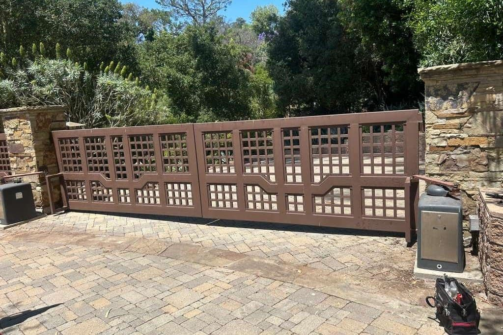
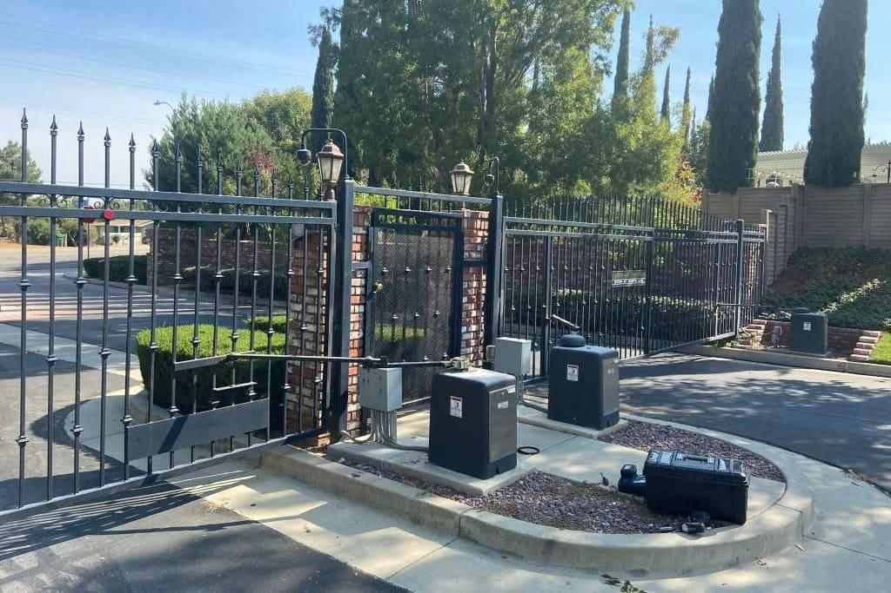
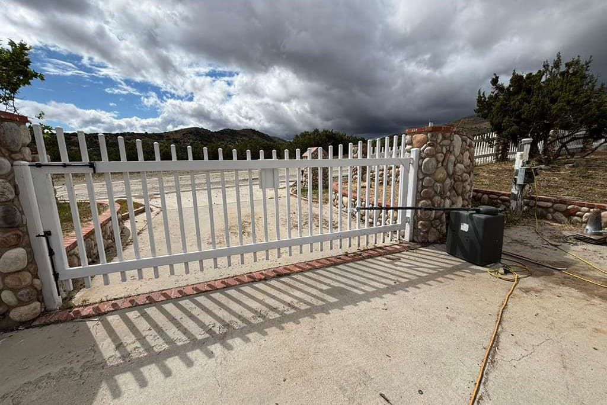
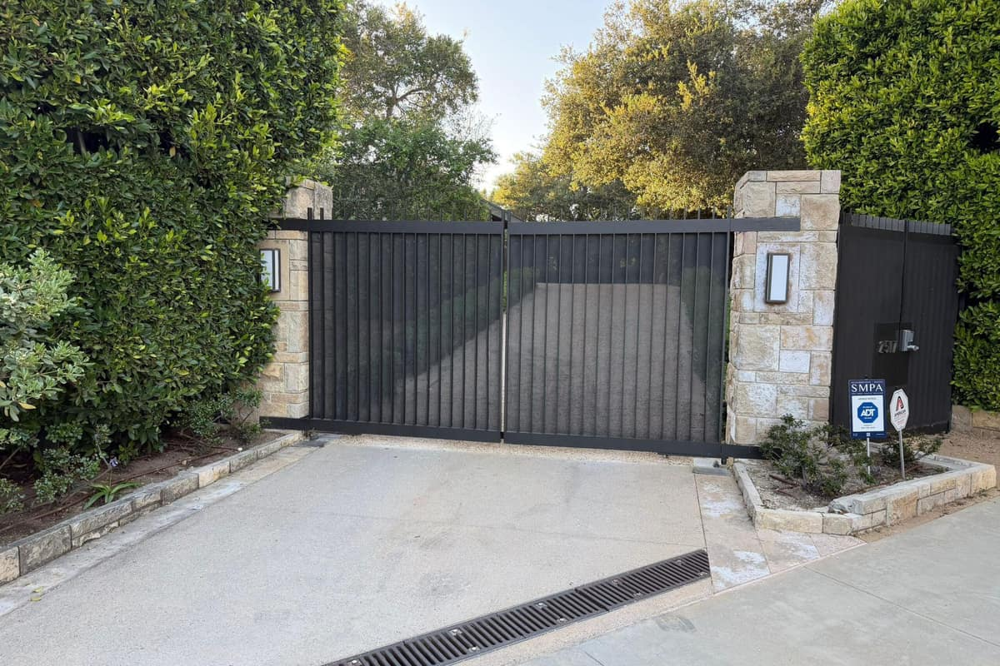
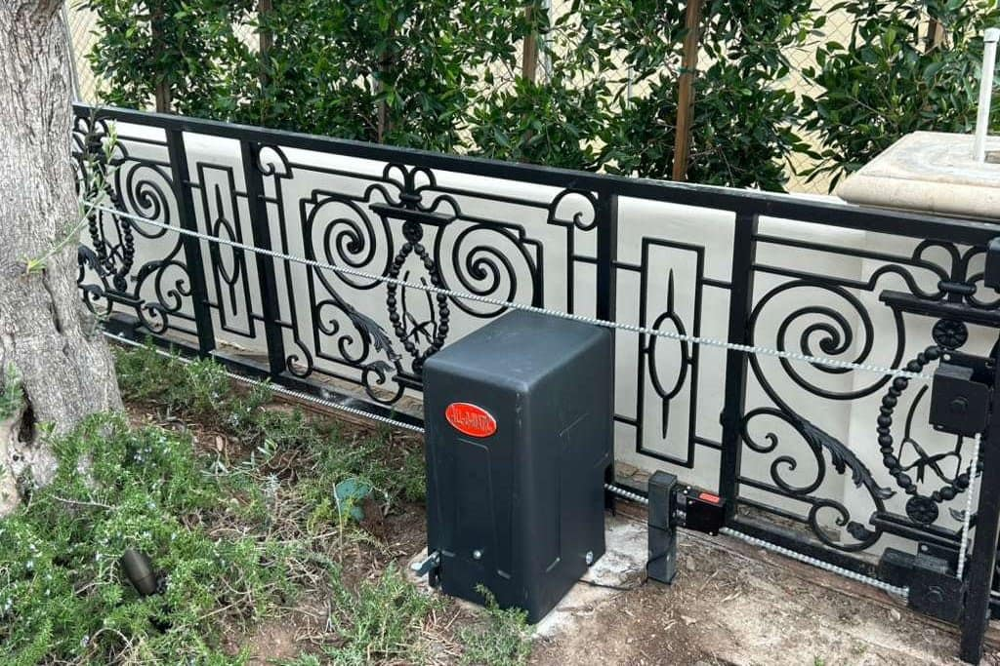

Our Work
Real Jobs. Real Results.
A sample of gate repairs we've completed across Dallas-Fort Worth.






Fast, affordable gate repair across the entire DFW Metroplex. LiftMaster, US Automatic & all major brands. Call now — we come to you.
Our certified technicians repair every type of gate system across the entire DFW Metroplex — same-day, any brand.
Wiring faults, control board failures, sensor issues — we diagnose and fix all electrical gate problems fast.
Learn More →Swing gates, slide gates, barrier arms — full repair and calibration for all automatic gate systems.
Learn More →Motor not running or running weak? We repair and replace all gate motor brands with OEM and aftermarket parts.
Learn More →Gate stuck open or locked closed? Our 24/7 emergency response team covers the entire DFW area — any time, any day.
Learn More →Apartment complexes, business parks, warehouses — we service all commercial gate systems with minimal downtime.
Learn More →Keypads, intercoms, card readers, and remote systems — complete access control repair and programming.
Learn More →Hear directly from customers across Dallas, Fort Worth, Frisco, Southlake, and beyond — real jobs, real results.
Tell us what's wrong and we'll call you back within 30 minutes. Or reach us directly at +1 (214) 735-4314.
We're gate specialists — and in DFW, that difference shows the moment we arrive at your property.
Our techs are trained on LiftMaster, US Automatic, Viking, and every major brand. No guessing, no learning on your dime.
We keep technicians positioned across DFW so we can reach Dallas, Frisco, Fort Worth, Plano, and everywhere in between — fast.
You get a clear quote before we touch anything. No hidden charges, no surprise fees. What we quote is what you pay.
Every repair comes backed by our labor warranty. If the same issue returns within the warranty period, we come back and fix it — no charge.
Our service vans carry the most common parts for DFW's most popular gate systems. Most repairs are completed in a single visit.
A sample of gate repairs we've completed across Dallas-Fort Worth.





We carry parts and have factory-level training for all major gate brands sold in the DFW market.


Don't see your brand? +1 (214) 735-4314 — we service virtually every gate system on the market.
From downtown Dallas to outer suburbs — if you're in the DFW Metroplex, we come to you.
Dallas-Fort Worth's most trusted gate repair team is ready to respond. Same-day service available throughout the entire Metroplex.
+1 (214) 735-4314